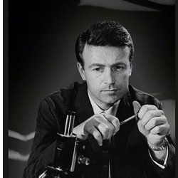

| Home | The Doctors | The Companions | The Villians |
|
|||
|
Ian Chesterton Ian Chesterton is a science teacher at the Coal Hill School and works with Barbara Wright, a history teacher. One of their students, Susan Foreman, the granddaughter of the Doctor, shows unusually advanced knowledge of science and history. Attempting to solve the mystery of this "unearthly child," Ian and Barbara follow Susan back home to a junkyard, where they hear her voice coming from what appears to be a police box. When they investigate further, they discover that the police box exterior hides the much larger interior of a time machine known as the TARDIS, and are whisked away on an adventure in time and space with the Doctor and Susan. Ian provides the series with an action-orientated figure, able to perform the physical tasks that the elderly Doctor cannot. His concern, above all, is for the safety of the TARDIS crew, and in the early stories he often takes issue with the Doctor's habit of placing the group in harm's way just to satisfy his own curiosity. The chemistry between Barbara and himself is also evident, although the nature of their relationship is never made explicit in the television series, and their eventual marriage is only revealed forty-five years later.[1] Ian shows a breadth of skills throughout his tenure with the Doctor. He manages to create fire (An Unearthly Child), rides a horse, knows how to fight with swords (The Romans) and is knowledgeable about pressure points that can paralyse an opponent (The Aztecs). He is also fiercely protective of Barbara, going on a lone mission to rescue her from Saracens in The Crusade. In that story, he is also knighted by King Richard I of England as "Sir Ian of Jaffa". After many travels, Ian and Barbara eventually use a Dalek time machine to go home, two years after their disappearance. The character of Ian was intended by the production team to return for a guest appearance in the 1983 Doctor Who story Mawdryn Undead, but this plan fell through when Russell proved to be unavailable. The script was modified to instead feature Alistair Lethbridge-Stewart as the story's schoolteacher character. However, in 1999 Russell did return to the part for the BBC Worldwide video release of The Crusade, two of the four episodes of which are missing from the archives. Russell provided linking narration between the existing episodes in character as an aged Ian Chesterton reminiscing about the events of the story. Ian was mentioned in Death of the Doctor, a two-part story in the fourth series of The Sarah Jane Adventures transmitted in October 2010. Sarah Jane Smith states that Ian and Barbara have married, become professors, live in Cambridge, and are said not to have aged since the 1960s. In the 50th Anniversary Special "The Day of the Doctor", the sign for Coal Hill Secondary School in the opening shot labels the Chairman of the Governors as I. Chesterton. Coal Hill teacher and companion of the Doctor Clara Oswald does not notice his photograph and name on the bulletin board in UNIT's Black Archive, in the same episode, when pausing over an adjacent photograph of Susan
|